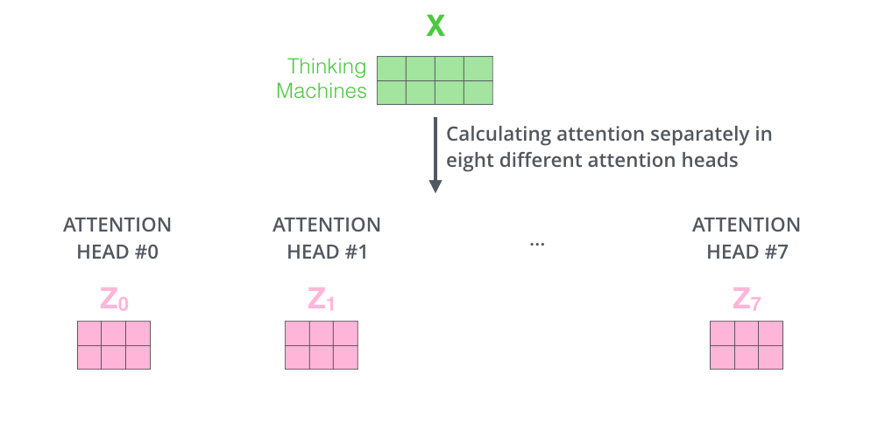

Transformer
Table of Contents
Transformer是一类 神经网络 架构
Transformer 现在越来越受欢迎了，最近被OpenAI用于训练他们的语言模型 同时也被DeepMind的AlphaStar 采用，用于他们的程序击败那些顶级星际玩家
Transformer是为了解决 序列传导 问题或神经网络 机器翻译 而设计的，意味着任何需要将 输入序列 转换 为 输出序列 的任务都可以用，包括语音识别和文本到语音转换等

对于需要进行 序列传导 的模型，有必要有某种 记忆
例如，将以下句子翻译到另一种语言(法语): “The Transformers” are a Japanese [[hardcore punk]] band. The band was formed in 1968, during the height of Japanese music history” 本例中，第二句话中的“the band”一词指代第一句中引入的“The Transformers” 当读到第二句中的"the band"，你知道它指的是“The Transformers” band 这对翻译很重要。事实上，后一句话中的某个词指代前几句话中出现的某个词，像这样的例子很多
翻译这样的句子，模型需要找出之间的依赖和关联。 循环神经网络 RNNs 和 卷积神经网络 CNNs 由于其特性已被使用来解决这个问题。 首先来回顾一下这两种架构及其缺点
循环神经网络
循环神经网络内部有 循环 ，允许 信息 保存 其中
如上图所示，可以看到神经网络的一部分 \(A\)，处理 输入 \(x_t\)，然后 输出 \(h_t\) ， A处循环 使得 信息可从前一步传递至后一步
换一种方式思考这些循环：循环神经网络可认为是同一网络A的多重备份，每个网络将信息传递给其后续网络
看一下如果将循环展开会如何：

图中 链式 本质清楚地表明循环神经网络与序列和列表相关
如果以这种方式翻译一段文本，需要将文本中的每个单词设置为其输入 循环神经网络将序列中前面的词语的信息传入后一个神经网络，这样便可以利用和处理这些信息
下图展示了 sequence to sequence 模型通常是如何用循环神经网络工作的。每个单词被单独处理，然后将 编码阶段的隐状态 传入 解码阶段 以 生成 结果句子 ，然后这样就产生了输出
长期依赖的问题
考虑一下这类模型，即使用之前看到的单词预测下一个单词
如果需要预测这句话“the clouds in the ___”的下一个单词，不需要额外的语境信息，很显然下个单词是“sky” 这个例子里，相关信息和需预测单词的距离很近
循环神经网络可以学习前面的信息，并找出句中下一个单词：

但有些情况需要更多语境信息
例如试图预测这句话的最后一个单词: “I grew up in France… I speak fluent ___” 最靠近这个单词的信息建议这很有可能是一种语言，但当想确定具体是哪种语言时，需要语境信息France 而这出现在较前面的文本中
当相关信息和词语之间距离变得很大时，RNN变得非常低效。那是因为，需要翻译的信息经过运算中的每一步，传递链越长，信息就越可能在链中丢失
理论上RNN可以学习这些长期依赖关系，不过实践表现不佳，学不到这些信息 因而出现了LSTM，一种特殊的RNN，试图解决这类问题
Long-Short Term Memory (LSTM)
我们平时安排日程时，通常会为不同的约会确定不同的优先级 如果有什么重要行程安排，我们通常会取消一些不那么重要的会议，去参加那些重要的 RNN不会那么做。无论什么时候都会不断往后面加信息，它通过应用函数转换全部现有信息 在过程中所有信息都被修改了，它不去考虑哪些重要，哪些不重要
LSTMs 在此基础上利用 乘法 和 加法 做了一些小改进。在LSTMs里， 信息流 经一种机制称为 细胞状态 。LSTM便可以选择性的记忆或遗忘那些重要或不重要的事情了。LSTM内部看起来像是这样:

每个细胞的输入为 \(x_t\) (在句子到句子翻译这类应用中 \(x_t\) 是一个单词), 上一轮细胞状态以及上一轮的输出。模型基于这些输入计算改变其中信息，然后产生新的细胞状态和输出
这里不会详细讲每个细胞的实现机制，如果想了解这些细胞的运作机制，推荐看一下Christopher的博客: Understanding LSTM Networks -- colah's blog https://colah.github.io/posts/2015-08-Understanding-LSTMs/
这些循环使得循环神经网络看起来有点神秘。 但如果再细想一下，事实上采用细胞状态后，在翻译过程中，句子中对翻译单词重要的信息会被一轮一轮传递下去
LSTM的问题
总体来说问题LSTM的问题与RNN一样 例如当句子过长LSTM也不能很好的工作 原因在于保持离当前单词较远的上下文的概率以距离的指数衰减，那意味着当出现长句，模型通常会忘记序列中较远的内容 RNN与LSTM模型的另一个问题，由于不得不逐个单词处理，因此难以并行化处理句子。不仅如此，也没有长短范围依赖的模型
总之，LSTM和RNN模型有三个问题:
- 顺序计算，不能有效并行化
- 没有显示的建模长短范围依赖
- 单词之间的距离是线性的
Attention
为了解决其中部分问题，研究者建立了一项能对特定单词产生注意力的技能 当翻译一个句子，我会特别注意我当前正在翻译的单词 当我录制录音时，我会仔细聆听我正在写下的部分 如果你让我描述我所在的房间，当我这样做的时候，我会瞥一眼描述的物体 神经网络用attention可以做到同样的效果，专注于给出信息的那部分 例如，RNN可以会注意另一RNN的输出。在每个时点它聚焦于其他RNN不同的位置
注意力 attention 是一种用于神经网络的技术。 对于RNN模型，与其只编码整个句子的隐状态，可以把 每个单词的隐状态 一起传给 解码器阶段 。在RNN的每个步骤使用隐藏状态进行解码。详见下面动图

其背后的想法是句子每个单词都有相关信息。为了精确解码，需要用注意力机制考虑输入的每个单词
对于要放入序列传导RNN模型的注意力，分成 编码 和 解码 两步。一步以绿色（编码）表示，另一步以紫色（解码）表示。
绿色步骤负责由 输入 建立 隐状态 。把句子中每个单词产生的 所有 隐状态 传入 解码 阶段，而不是和过去一样，仅传递一个隐状态给解码器。每个隐状态都会在解码阶段被使用，去找出网络应该注意的地方。
比如，当翻译这句 “Je suis étudiant”法语句子到英语时，需要在翻译时解码步骤去查不同的单词

或再比如，当将“L’accord sur la zone économique européenne a été signé en août 1992.” 法语翻译成英语
下图展示了需要对每个输入赋予多少注意力：

不过前面讨论的一些问题，用带attention的RNN仍然无法解决 比如，不可能并行处理输入的单词，这对较大的文本语料，增加了翻译文本的用时
卷积神经网络
卷积神经网络可以帮助解决这些问题，可以做到：
- 并行化 (按层)
- 利用局部依赖
- 位置间的距离是对数级的
一些流行的序列传导网络, 例如 Wavenet 和 Bytenet 就采用卷积神经网络

卷积神经网络可并行处理是因为，输入的每个单词可被同时处理并不必依赖于前一个单词翻译的结果。不仅如此，输出单词与任何CNN输入的单词的“距离”是 \(\log{N}\) 数量级：即输入单词到输出单词连线形成的树的高度 (如上面动图所示)。 这比RNN输出到其输入的距离要好很多，因为其距离是 \(N\) 数量级
问题在于卷积神经网络在翻译句子过程中不一定有助于解决依赖问题 这就是transformers被创造出来的原因，它结合了CNN和attention机制
Transformers
现在来看一下Transformer是如何工作的。 Transformer 是一类用attention来 提速 的模型，具体来说使用的是 self-attention
从内部来看Transformer与之前模型架构相似，只是Transformer由 6 个 编码器 和 6 个 解码器 组成
编码器非常相似，所有编码器都具有相同的架构。解码器也有相同的属性诸如互相之间非常相似。编码器有两层: self-attention层 和 前馈神经网络层
编码器的输入先进入 self-attention层 ，有助于编码器在编码句中特定单词时可参考输入句子中其他单词。解码器也包含这两层，不过在两层中间增加了 attention层 ，以帮助解码器 聚焦 到 输入句子的相关部分
Self-Attention
注: 这部分转自Jay Allamar的博文 https://jalammar.github.io/illustrated-transformer/
先来看一下模型中各种不同的 向量 /张量，它们在已训练模型组件中如何流转，从而把输入转化成输出的。 由于这是一个NLP应用实例，我们先用 词嵌入 embedding 算法把每个输入的词语转换为 词向量
每个单词被转换为一个 长度512 的 向量 。图中用这些简单的 方块 表示这些向量：
- 仅在 最底层 的 编码器处进行词嵌入转换。对于所有编码器，它们都接收大小为512的向量列表
- 最底层的编码器接收的是词嵌入，但其他编码器接收的输入是其下一层的直接输出
- 当输入序列中的单词做词嵌入转换后，数据就按 顺序 流经各层编码器的2层结构
此处开始看到Transformer的一个重要特性， 每个位置上的单词 在 编码器 中流经 自己的 路径
- 在self-attention层处理这些路径的依赖关系
- 前馈神经网络不处理这些依赖关系，这样当数据流经前馈神经网络时，不同的路径可被 并行 执行
接下来，将切换到一句短句实例，看一下在编码器的子层里会发生什么
计算 self-attention
首先来看一下如何用向量计算self-attention，然后再看一下利用矩阵运算的实现方式：
self-attention计算的第一步是通过编码器的 输入向量 (本例中是每个单词的词嵌入向量) 建立 Query , Key 和 Value 三个向量，通过 输入的词嵌入向量 乘以 之前训练完成的三个矩阵 得到。这些 新向量的长度 小于 词嵌入向量的长度 。这里取 \(64\)，而词嵌入向量及编码器的输入输出长度为 \(512\)
这是一个架构性选择，向量长度不需要变得更小，使得多头注意力(multiheaded attention)计算基本稳定
将 词向量 \(x_1\) 乘以 权重矩阵 \(W^Q\) 得到 \(q_1\)，即与这个单词关联的 query 向量
这样，最终分别得到输入句子里每个单词的“query”,“key”和“value”投射 那“query”, “key”和“value”向量是什么? 它们是一种抽象，在计算和考虑注意力时会被用到
计算self-attention的第二步是计算一项 得分 score 。在特定的位置编码一个单词时，该得分决定了在 输入句子的其他部分 需要 放多少 焦点 。因此需要计算句中 每个单词 针对 这个词 的得分：
- 得分等于 当前词的query向量 与 需评分词语的key向量 的 点积
以计算句中第一个单词 "Thinking" 的self-attention为例： 如果需要计算#1位置处单词的self-attention，第一个得分是q1与k1的点积，第二个得分就是q1和k2的点积
第三步是将所有 得分 除以 \(8\)
论文中取的是 ”向量维数开根号“ 64，这样会得到更稳定的梯度。当然也可以用其他值，不过这是默认值)
第四步将结果放入一个 softmax 操作来 正则化 这些得分，使它们都 大于0且加和为1
这个经过softmax的score决定了 该单词 在 这个位置 表达 了 多少
很显然当前位置所在的单词会得到最高的softmax得分，不过有时候有助于算法注意到其他与当前单词相关的单词
第五步，将 每个value向量 乘以 softmax得分 (准备对它们求和)
这里的意图是保持需要聚焦的单词的value，并且去除不相关的单词, 这时候score 会是一个很小的数字 比如0.001
第六步 求和加权 后的 value向量 。这就产生了对于 第一个单词 在 self-attention层 上 此位置的输出
self-attention的结果向量 就可以拿来作为 前馈神经网络 的 输入
不过实际实现中，考虑到性能该计算由矩阵形式运算完成
矩阵计算
第一步是计算查询 Query , 键 Key 和值 Value 矩阵 。通过将 嵌入向量 打包到一个矩阵 \(X\) 中，然后将其与训练的权重矩阵 \(W^Q\) , \(W^K\) , \(W^V\) 相乘 来实现这一点：

X 矩阵中的每一行对应输入句子中的一个单词 再次看到嵌入向量的大小（512，或图中的4个框）和 q/k/v 向量的大小（64，或图中的3个框）之间的差异
最后，由于处理的是矩阵，可以将步骤二到步骤六浓缩成一个公式来计算自注意力层的输出：

Multihead attention
这篇论文通过添加一种称为 多头 注意力的机制进一步优化了自注意力层。这在两个方面提高了注意力层的性能：
扩展模型关注不同位置的能力：
是的，在上面的例子中， z_1 包含了其他编码的一部分，但它可能会被实际单词本身所主导 如果正在翻译一句像“The animal didn’t cross the street because it was too tired”的句子，知道“it”指的是哪个单词会很有用
为注意力层提供多个 表示子空间 ：通过多头注意力，不仅拥有一组查询/键/值权重矩阵，而是有多组。每组权重矩阵都是随机初始化的。然后，在训练之后，每组权重矩阵用于将输入的嵌入（或来自较低编码器/解码器的向量）投影到不同的表示子空间中
Transformer 使用八个注意力头，所以我们最终为每个编码器/解码器得到八组

在多头注意力机制中，我们为每个头分别保持独立的 Q/K/V 权重矩阵，从而产生不同的 Q/K/V 矩阵 与之前一样，我们将 X 矩阵乘以 W^Q/W^K/W^V 权重矩阵以生成 Q/K/V 矩
如果按照上面概述的自注意力计算方式，使用不同的权重矩阵重复进行八次，最终得到八个不同的 \(Z\) 矩阵:

这带来了一些挑战。前馈层并不期望得到八个矩阵：它期望得到一个单独的矩阵（每个单词对应一个向量） 因此，需要一种方法将这八个矩阵压缩成一个单独的矩阵。那么如何做到这一点？
可以将这些矩阵 连接 起来，然后再 乘以 额外的 权重矩阵 \(W^O\)

这基本上就是多头自注意力的全部内容了。这里有相当多的矩阵。尝试将它们都放在一个可视化图中，这样就可以一目了然地看到它们：

现在重新审视之前的例子，看看在例句中的单词“it”时，不同的注意力头部在关注哪些内容：

在编码单词“it”时，一个注意力头部主要关注“the animal”，而另一个注意力头部则关注“tired” 在某种意义上，模型对单词“it”的表示中融入了“animal”和“tired”的部分表示
如果把所有的注意力头都放入图片，那么会更难以解释：

Positional Encoding
在目前描述的模型中，缺少了一种处理输入序列中单词顺序的方法
为了解决这个问题，Transformer 为每个 输入嵌入 添加 了一个 向量 。这些向量遵循特定的模式，模型可以学习这种模式，从而帮助它确定 每个单词的位置 ，或者序列中 不同单词之间的距离
直观上来说，将这些值添加到嵌入中后，当它们被投射到 Q/K/V 向量中并在点积注意力中使用时，嵌入向量之间的距离会变得有意义

如果假设嵌入的维度为 4，实际的位置编码将如下所示：

实际的模型现在看起来如何呢？
在下图中，每一行对应一个 向量的位置编码 。因此，第一行将是我们添加到输入序列中第一个单词嵌入的向量。每一行包含 512 个值：每个值的范围在 1 和 -1 之间。使用颜色编码使其模式可见

这是一个实际的例子，展示了 20 个单词（行）的位置编码，嵌入大小为 512（列）。可以看到它在中间似乎被分成了两半 这是因为左半部分的值是由一个函数（使用正弦函数）生成的，而右半部分是由另一个函数（使用余弦函数）生成的。然后将它们连接起来，形成每个位置编码向量
在论文的第 3.5 节中描述了位置编码的公式。可以在 get_timing_signal_1d() 方法中看到生成位置编码的代码
这并不是唯一可能的方法进行位置编码。然而，它具有能够扩展到未见过长度的序列的优势 例如，如果训练模型被要求翻译一个比 训练集 中任何句子都长的句子
2020年7月更新：下面显示的位置编码来自 Tensor2Tensor 对 Transformer 的实现。论文中展示的方法略有不同，它并不是直接连接，而是交织这两个信号。下图显示了其外观：

Residuals
在继续之前，需要提到编码器架构中的一个细节，即每个编码器中的每个子层（自注意力机制、前馈神经网络）都有一个 残差连接 ，并且在其后进行 层归一化 步骤

如果要将与自注意力机制相关的向量和层归一化操作可视化，它看起来会是这样的：

这同样适用于解码器的子层。想象一个堆叠了两个编码器和解码器的Transformer模型，它看起来会是这样的：

解码器
现在已经基本涵盖了编码器部分的大部分概念，基本上也知道解码器组件是如何工作的 让我们看看它们如何共同工作
编码器首先处理输入序列。然后， 顶部编码器 的输出被 转换 为一组 注意力向量 \(K\) 和 \(V\) 。这些向量将被 每个解码器 在其 Encoder-Decoder-Attention 层中使用，帮助 解码器 集中注意力 于 输入序列中的适当位置 ：

完成编码阶段后，开始解码阶段 解码阶段的每个步骤输出输出序列中的一个元素（在这种情况下是翻译句子到英语）
以下步骤重复这个过程，直到到达一个 特殊符号 ，表明Transformer解码器已经完成其输出。 每个步骤的输出 被 送入 到 下一个时间步的底部解码器中 ，解码器像编码器一样将其解码结果逐步冒出。就像处理编码器输入一样，对这些解码器输入进行嵌入并添加位置编码，以指示每个单词的位置

- 解码器中的 自注意力层 与编码器中的自注意力层操作略有不同：
在解码器中，自注意力层只能关注 输出序列中的先前位置
在进行自注意力计算的 softmax 步骤之前，通过屏蔽未来位置（将它们设置为 -inf）来实现这一点
- 编码器-解码器注意力层 的工作方式类似于多头自注意力，但它的 查询矩阵 来自于它 下面的层 ，并且它从 编码器堆栈的输出 中获取 键 和 值 矩阵
最后的 Linear 和 Softmax 层
解码器栈输出一个浮点数向量。如何将其转换成一个单词呢？ 这就是最后一个线性层和其后一个Softmax层的工作
线性层：一个简单的 全连接神经网络 ，它将 解码器栈生成的向量 映射 到一个大得多的向量中，这个向量被称为 logits向量
假设我们的模型知道10,000个独特的英文单词（模型从训练数据集中学习到的“输出词汇表”） 这样，logits向量的宽度就是10,000个单元，每个单元对应一个独特单词的分数 这就是我们解释模型通过线性层输出的方式
- softmax层：将这些 分数 转化 为 概率 （所有概率都是正值，并且总和为1.0）。具有 最高概率 的单元被选中，与之关联的单词被作为此时间步的输出